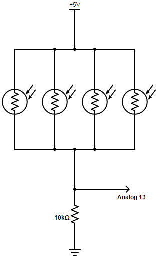

CSC360 Project Phase 1 2/4/2016
Project Overview
The TR-8R system is composed of two independand modules. The command module and the actuator module, which communicate over bluetooth. The command module is responsible for managing the joystick (with associated button) and the photoresistors. The actuator module controls the servo motor and the laser based on commands from the command module.
Phase 1: Joystick, Servo and Laser
The purpose of the joystick in the project is to have it interact with the servo and laser. The servo rotates left and right based on the x position of the joystick, and the laser pointer is controlled by the push button included on the joystick.
Joystick specifications
The joystick has 3 leads excluding GND and 5V, these are VRX, VRY, and SW. The VR connectors output the current X and Y position of the joystick as an analog signal, and the SW connector outputs the state of the push button. The position leads were connected to inputs on our arduino A8 and A9 for X and Y respectively, and the button output to pin 44, as seen in figure X. Usually a pull-up resistor would be used with the button to avoid errors due to the open ended circuit when the button is released, however the arduino library includes the convenient pull-up:
pinMode(44,INPUT_PULLUP)Servo control
The servo is controlled by using pulse width modulation (PWM), where a HIGH signal is transmitted for 500-2500 µs every 20-30 ms, where sending 500 µs pulses positions the servo to the far left, and 2500 µs, the far right. The servo motors are somewhat delicate, so it is important to never send pulses that exceed that range. Additionally, due to the noise and lack of steadiness in controlling the joystick, it is useful to apply some smoothing to the desired position of the joystick in order to reduce jitter. We used exponentially weighted moving average (EWMA) with a weight of 0.9.
Before connecting the servo to our desired output pin, we tested to make sure that the signals being sent were indeed adhering to how PWM should work. For this we used a logic analyzer, the expected output is shown below:
As an additional precaution we put a manual limit on the pulse size, the final servo control code is seen below:
joyStickX = (joystickX * weight) + ((1.0f - weight) * analogRead(joyPinX));
servoPos = joyStickX+988;
if(!(pos < 550 || pos > 2450)) {
myservo.writeMicroseconds(pos);
}
delay(20);Laser pointer control
To control the laser pointer we simply read from the joystick button using the method described above, and output it to the laser pointer via pin 42.
Phase 1: Light-sensing and LCD (Feedback)
Light-sensing
|  | Photoresistors are resistors than change resistance based on their explosure to light. In this project the photoresistors job is to detect if TR-8R has been hit by the laser or not. The resistors need to vary the voltage approximately within the range of 0-5V to be read easily by the analogue inputs on the Audrino, so an aditional 10kΩ resistor is required. We use multiple photoresistors in parallel to reduce the variance in readings. We also cluster the heads of the photoresistors together so that the laser can hit multiple photoresistors at the same time (see below image). Expoentially weighted moving average is used to smooth the inputs so that noise has less of an effect on the light/no-light reading. |
|
|
|
LCD
The LCD display informs the user if the photoresistors have detected the laser, and if the button on the Joystick is depressed. The LCD is updated immediatly when new data arrives from the photoresistors or the joystick button, rather that having a separate update cycle.
Phase 2: System Overview with Time-Triggered Scheduler
Phase 2 introduces the need to communicate between bluetooth radios. In order to accomplish this, our code had to be transformed to use a time-triggered architecture. We used the set up recommended by the professor available here. The ability to schedule tasks to only run on certain invervals allows for synchronization between the devices.
The way the scheduler works is documented at the URL provided, but a brief overview is included here too. The scheduler must be initialized using Scheduler_Init(), followed by passing each task as a callback into the Scheduler_StartTask method, along with the initial delay (ms from the start of each cycle to run), and the period (how often to run the task).
Note: scheduler.cpp was giving us errors, especially with the millis() method, but this was fixed by renaming it to scheduler.ino
Phase 2: Bluetooth Radio Interfacing and Integration
Pairing
The bluetooth modules behave like a wireless UART port. The lack of a wire means that each modules needs another way to identify who to communicate with, as there could be several different systems using bluetooth in range. The process of attaching modules to eachother wirelessly is called pairing, and involves a master device and a slave device. It doens't matter which module is the master and which is the slave, becuase, once paired, they behave identially. Since the bluetooth modules act as UART ports, you can wire them as a loopback and configure them interactively. Using the Audrino as a passthrough, we connected a terminal to each bluetooth module and set each modules PIN to the same value (using the AT+PIN command) and one to master, one to slave (using the AT+ROLE command). After letting the modules discharge for 30 minutes, the pairing is complete. Now the modules can be wired as if they were the other audrino board's UART ports, and, once powered, will connect to each other automatically. For more information, see the HC-06 Configuration Guide.
Command module
The command module is responsible for sending the state of the joystick and the state of the button to the actuator module. We sent both these states in each byte of UART content. This allows us to send only a single byte every 20ms. The 7 high bits of each byte are the current value of the joystick axis we are using. 128 values are easily enough to smoothly cover the joystick range, and the discretization actually helps reduce jitter. The lowest bit is set when the button is up, and becomes to zero when the button is depressed.
int bluetoothSend = joystickSendValue * 2 + isButtonUp;
Serial1.write(bluetoothSend);